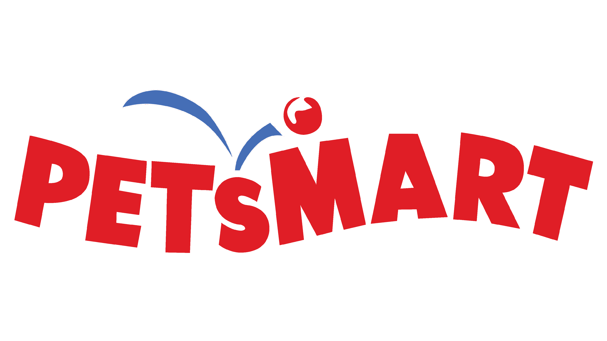

Experience
PetSmart – Sr. Cloud Network Engineer (2022 – Present)
At PetSmart, I led the design and deployment of a hybrid cloud network across AWS and Azure to support 1500+ retail locations. This included building high-availability SD-WAN connectivity using Viptela and Versa, micro-segmented Cisco ACI fabrics, and secure tunnels using Palo Alto firewalls. I implemented automated infrastructure provisioning with Terraform and Ansible, and integrated Zscaler, F5, and Panorama for centralized policy and performance management across distributed environments.
Tools Used: AWS, Azure, Cisco ACI, Viptela, Versa SD-WAN, Palo Alto, Ansible, Terraform, Zscaler, F5, Panorama
Challenges Faced
- At PetSmart, connecting AWS, Azure, and on-prem systems caused a lot of routing problems — some traffic was getting lost or misrouted. I solved this by creating a standard BGP setup with Terraform that made traffic flow smoothly between all platforms. We also faced network slowdowns at over 1500 stores due to different ISPs. I fixed this by setting up smart SD-WAN policies using Viptela to prioritize important traffic like POS and voice. During Zscaler rollout, some internal apps broke due to SSL inspection. I worked with the Zscaler team to add PAC file rules that allowed the apps to work securely. Managing firewall rules across Palo Alto, ASA, and Fortinet was also messy, so I used Ansible to automate policy checks and keep things clean and consistent.
 American Express – Sr. Network Engineer (2018 – 2022)
American Express – Sr. Network Engineer (2018 – 2022)
At American Express, I was responsible for modernizing the global enterprise WAN. I migrated from legacy MPLS to Silver Peak SD-WAN, deployed ACI Spine-Leaf architecture, and built secure interconnects across AWS, Azure, and GCP. I led efforts on ExpressRoute, VPN gateway configurations, and Fortinet firewall segmentation. Additionally, I created automation playbooks to manage firewall policies and helped achieve PCI-DSS compliance through network segmentation and monitoring enhancements.
Tools Used: Silver Peak SD-WAN, AWS, Azure, GCP, Cisco ACI, Fortinet, ExpressRoute, Ansible, Python
Challenges Faced
- At American Express, we had to move from legacy MPLS to SD-WAN across multiple global sites. The migration was risky and caused routing overlaps at first. I used phased cutovers and Silver Peak policies to smooth the transition without downtime. Another challenge was connecting AWS, Azure, and GCP securely. I set up VPN tunnels, ExpressRoute links, and firewalls to make the multi-cloud setup stable and secure. We also needed to meet PCI-DSS compliance, so I automated firewall changes using Ansible and Python to reduce manual errors. Cisco ACI also had setup problems — I fixed these by checking health scores and automating rollbacks.
 Polygon – Network Engineer (2017 – 2018)
Polygon – Network Engineer (2017 – 2018)
At Polygon, I helped implement a scalable LAN/WAN network to support logistics operations across branch offices. I deployed Cisco and Juniper routers and switches, built VLAN trunking and access control using ACLs, and configured BGP/OSPF for stable routing. I also set up DMVPN, conducted Wireshark-based packet analysis, and supported WAN link monitoring to ensure reliable communication between remote offices and data centers.
Tools Used: Cisco, Juniper, VLAN, ACL, BGP, OSPF, DMVPN, Wireshark
Challenges Faced
- At Polygon, we were building branch networks with Cisco and Juniper gear. One issue was routing loops caused by incorrect OSPF settings, which I fixed by adjusting route costs after using Wireshark to trace the problem. The ACLs were hard to manage and confusing, so I replaced static rules with object-group ACLs to simplify everything. We also had failover delays with DMVPN, especially during link failures. I tuned the failover settings and improved response times. To catch problems earlier, I set up SNMP alerts and centralized logging so our team could react faster to network issues.